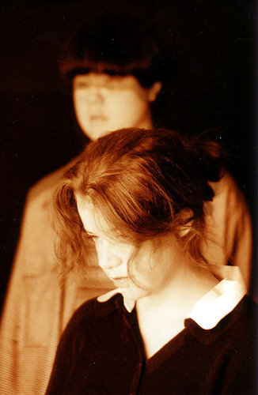

Pode-se considerar que o início da trajetória
do Love Spirals Downwards aconteceu na década de 80, em
Los Angeles, Estados Unidos, com os experimentos musicais do compositor
e multi-instrumentista Ryan Lum. No entanto, o projeto só
tomou forma e se consolidou quando Suzanne Perry, então
namorada de Ryan, passou a atuar como vocalista em 1991.
Inicialmente,
duas demos foram gravadas (Mediterrânea e Forgo)
e incluídas em uma coletânea que recebeu uma boa
resposta de ouvintes e críticos. Assim, em 1992, a dupla
lançou o primeiro trabalho.
Idylls foi lançado pelo selo
americano Projekt. Este trabalho trouxe treze faixas
do que podemos considerar o mais puro e intenso darkwave. Os arranjos
e execução de Ryan e voz doce e sutil de Suzanne
produziram um disco de estréia que foi considerado como
"um acústico suntuoso, linda voz feminina e harmonia
suave que elevam às alturas". Idylls traz momentos
de depressão como em Forgo e Illusory Me;
tensão como em Waiting for the Sunrise, e leveza
em Ladonna Dissima.
Após o sucesso do álbum de estréia,
a dupla deu início às gravações do
segundo disco de sua recente carreira. Ardor foi lançado
em 1994. Este disco despertou uma maior atenção
da mídia em relação ao trabalho de Ryan e
Suzanne, chegando a ser comparado com a música de Dead
Can Dance e Cocteau Twins.
Ardor, que contou com a participação
de Jennifer Ryan Fuller nos vocais, trouxe onze faixas. Will
you Fade e Sidhe são quase exemplos do que
pode ser considerado como ethereal. Enquanto Write
in Water e Depression Glass contam com uma instrumentação
densa e ao mesmo tempo sutil, com a voz de Suzanne fluindo com
suavidade sobre a melodia.
No ano de 1995, a banda se apresenta em Los Angeles,
Nova York, Seattle, Boston e Philadelphia. Já em 1996,
participa de um festival promovido pelo selo Projekt, em Chicago.
Em seguida, lança o single Sideways Forest com
três faixas: Sideways Forest, Sideways
Forest (Quantum Remix) e Amarillo. No mesmo ano,
é lançado o álbum Ever.
O terceiro CD traz, além da faixa Sideways
Forest, mais dez músicas que soam mais acústicas
com o violão ganhando um maior destaque. No entanto, algumas
faixas têm uma linha de baixo e percussões mais nítidas,
além de uma presença mais freqüente de elementos
eletrônicos.
Ever recebeu críticas como "belo
como sempre, Love Spirals Downwards surpreende com outro CD perfeito"
e "este CD, como qualquer outro do Love Spirals Downwards,
são altamente recomendáveis".
No ano seguinte, a dupla Ryan e Suzanne já
preparava material para mais um lançamento enquanto apresentava-se
novamente no Projekt Festival. Assim, em 1998, Flux foi
gravado e lançado novamente pelo selo Projekt. Este trabalho,
ao longo de suas oito músicas, traz uma atmosfera eletrônica
e dançante se comparado aos discos anteriores.
As faixas Ring, Psiche e
By Your Side trazem uma programação de bateria
eletrônica mais ritmada; enquanto Sunset Bell já
está muito próxima do Drum & Bass.
Um álbum diferente como uma proposta bem mais distante
dos primeiros trabalhos, mas que, no entanto, obteve a melhor
venda de toda a carreira do LSD.
Em 1999, a dupla se separa e Ryan dá continuidade
à carreira com a cantora Anji Bee em um projeto intitulado
Lovespirals (nome que obviamente faz referência
ao próprio Love Spirals Downwards) com uma sonoridade que
lembra um pouco o LSD; porém, com nítida influência
de Jazz. Enquanto Suzanne Perry, em 2002, formou o Melodyguild,
um projeto musical com influências do Industrial, Dream
Pop e Indie.
Ainda, em 2000, foi lançado Temporal
(a retrospective) que se trata exatamente de uma coletânea
dos maiores sucessos entre 1992 e 1998, com Ring, Depression
Glass e Ladonna Dissima, entre outras. No ano de
2007, os dois primeiros trabalhos, Idylls e Ardor,
foram relançados contendo remasterizações
e gravações ao vivo.
Uma carreira de apenas seis anos e quatro álbuns,
somada à personalidade e sofisticação inerentes,
foram suficientes para elevar o Love Spirals Downwards à
condição de ícone do Darkwave. Um exemplo
desta identidade musical construída ao longo dos anos é
que algumas músicas não se apóiam em uma
letra propriamente dita; mas sons vocálicos que simulam
a pronúncia de idiomas antigos. Ainda, músicas como
This Endris Night e And the Wood Comes Into Leaf
(ambas do primeiro álbum) são adaptações
de canções medievais.
Talvez uma boa definição esteja
na declaração dos próprios músicos
no ano de 1991: "nossa música é uma combinação
do que consideramos ser esteticamente agradável (...) nossa
música transcende qualquer categorização
de gênero (...) elementos de música oriental indiana,
rock psicodélico e ethereal (...) nós abandonamos
completamente o uso de idiomas como transmissor de pensamento
e emoção (...) instrumental e vocal trabalhem como
uma expressão artística”.
Por
Spectrum
Download
Disponível: